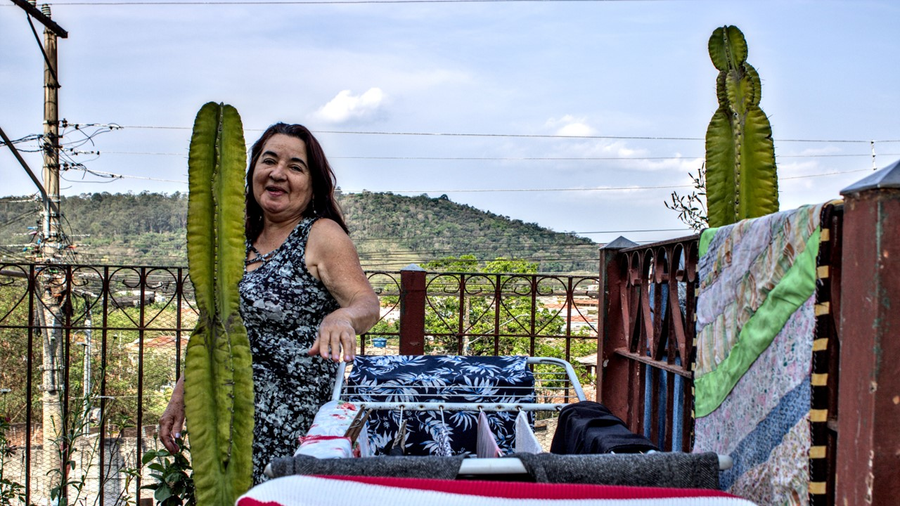
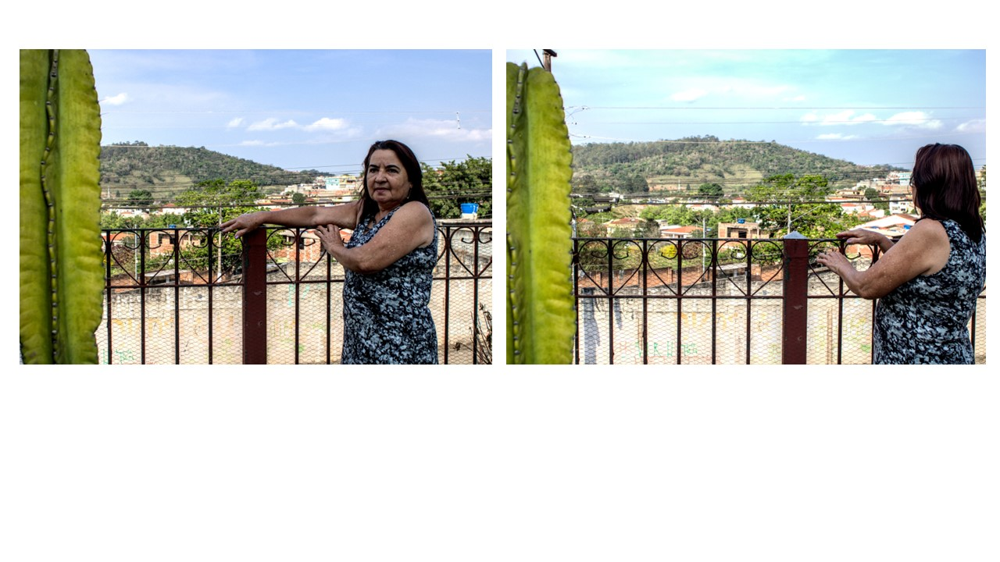
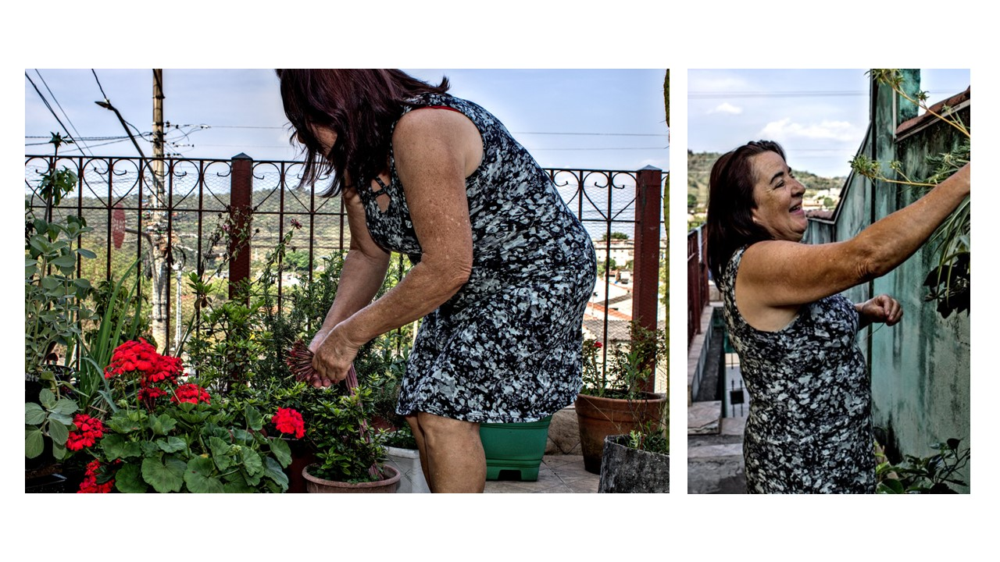
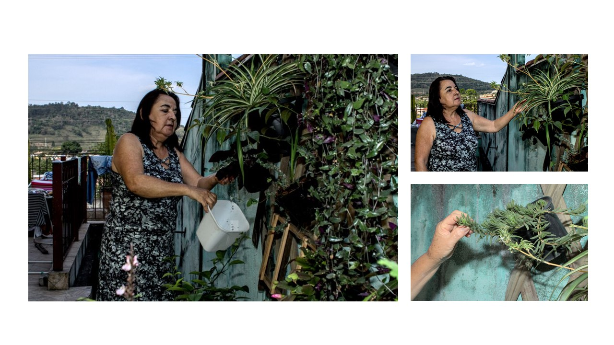
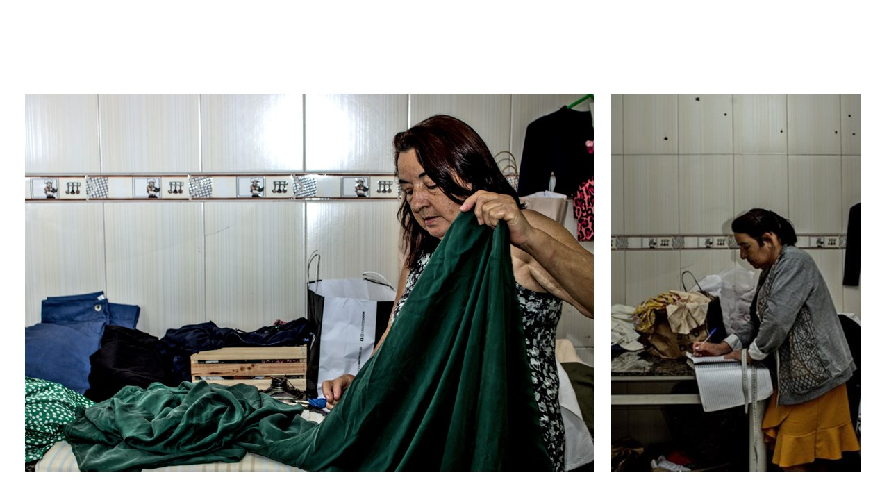
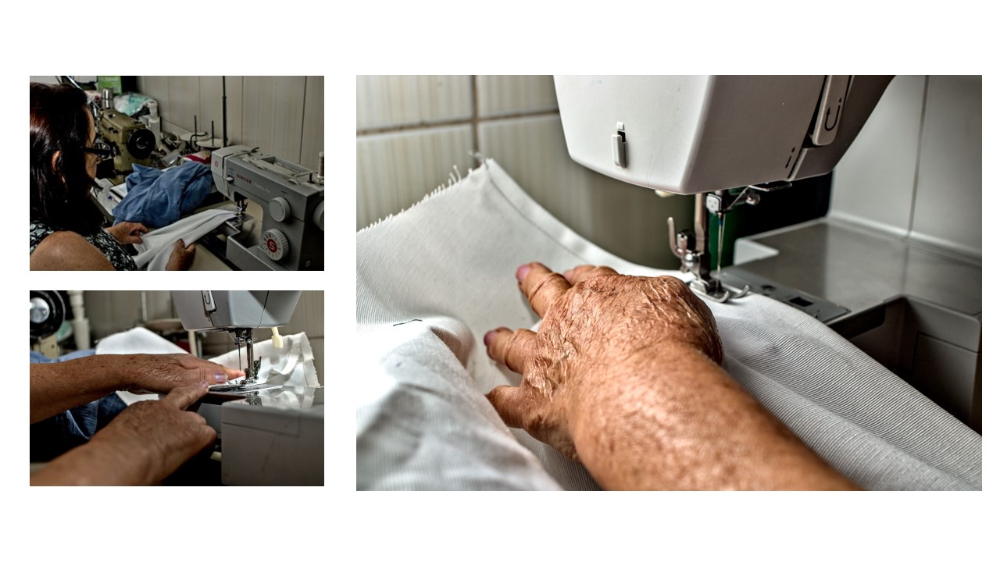
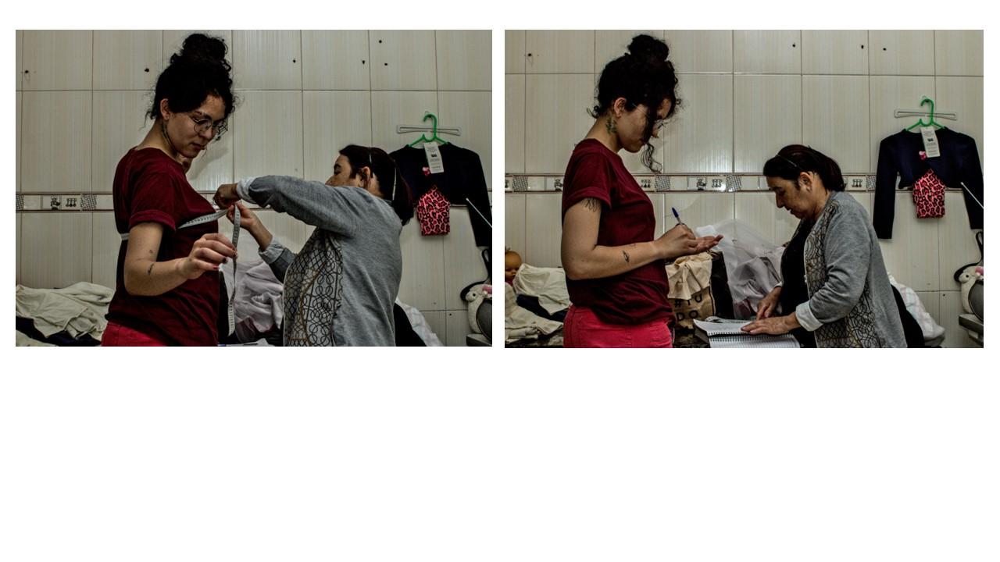
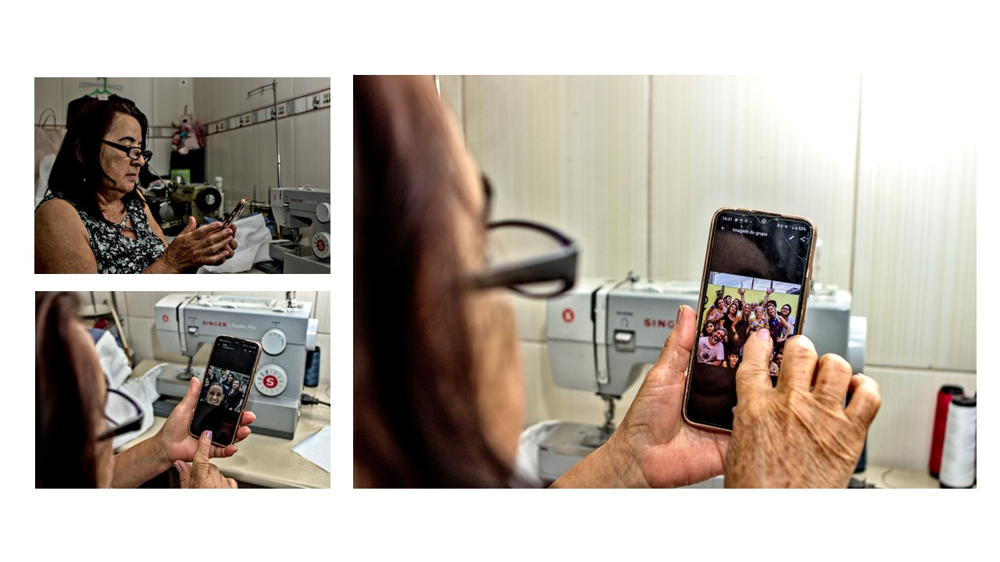
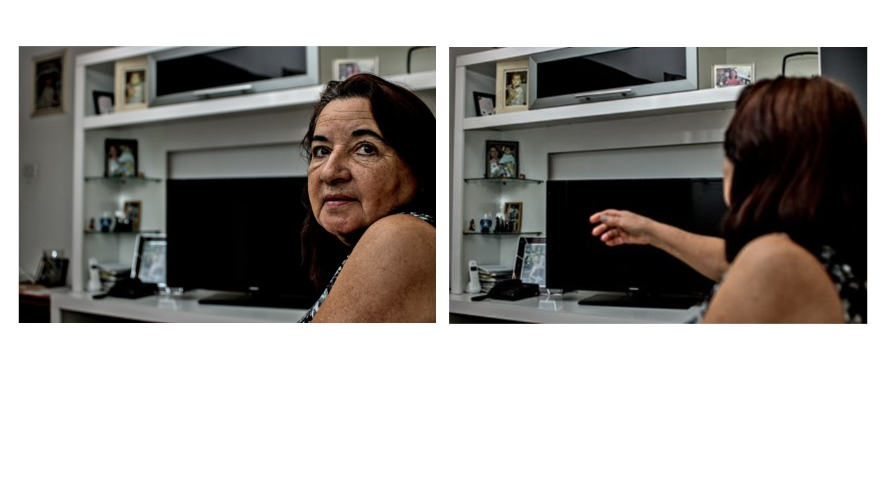

Maria

Cumprindo-se o tempo para Ana, concebeu no nono mês. E perguntou à parteira: "A quem dei à luz?" Respondeu a parteira: "A uma menina". Exclamou Ana: "Eis que minha alma foi exaltada!" E colocou a menina no berço. Quando se cumpriu o tempo definido pela Lei, Ana purificou-se e deu de mamar à menina. E pôs-lhe o nome de Maria. (Apócrifo de São Tiago 5:2)
Conforme o IBGE 2010, são quase 12 milhões de Marias no Brasil. Elas encheriam, tranquilamente, a cidade de São Paulo, e faltaria pouco para que as Marias enchessem toda a Região Metropolitana do Rio de Janeiro, nos dados do censo de 2022. São muitas Marias, mas também muitas histórias: cada uma delas é um Brasil, é um mundo. Entre tantas Maria José, Maria da Conceição, Maria de Lourdes e tantos nomes santos, cabem histórias que não caberiam num livro.







